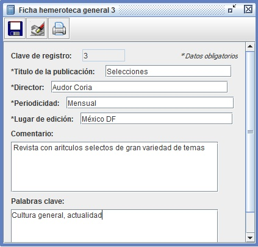
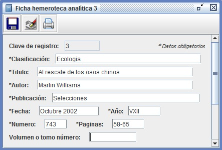

El sistema proporciona soporte para manejar un catalogo bibliográfico básico para guardar fichas bibliográficas, hemeroteca y hemeroteca analítica. Con ello se pretende facilitar labores de búsqueda de material de estudio, consulta, investigación, lectura, referencias.
Fichas que maneja el catalogo
El catalogo maneja tres tipos de fichas:
- Fichas Bibliográficas
La ficha bibliográfica se utiliza para identificar un libro mediante sus datos generales, puede catalogar un libro, tesis, compendio, antología, investigación u otros documentos generales para lo cual debe emplear los campos que apliquen a cada caso en particular.
Algunos de los campos de esta ficha de uso particular son:- Lugar de consulta: indica el lugar de consulta del libro o documento, por ejemplo biblioteca municipal, biblioteca escolar, biblioteca personal, referencia a material digital.
- Prologuista: Aplica para libros o documentos con un estudio o prólogo preliminar, indica la persona que realizo dicho prologo.
- Compilador: Aplica para compilaciones o antologías y se refiere al nombre de la persona que compilo los artículos contenidos en el documento.
- Traductor: Aplica para libros o documentos de idioma original distinto al de esa edición.
- Colección o serie: Aplica para libros o documentos que pertenecen a una colección o serie.
- Volumen o tomo: Aplica para libros o documentos que pertenecen a una colección o serie numerada.
- Resumen: Campo opcional se recomienda llenarlo siempre tratando de sintetizar la esencia del contenido del libro o documento (su contenido también es utilizado por el sistema para búsquedas genéricas por medio de palabras clave)
- Palabras clave: Campo opcional se recomienda llenarlo siempre su contenido es utilizado por el sistema para búsquedas genéricas por medio de palabras clave
- Fichas Hemeroteca general
La ficha Hemeroteca se utiliza para identificar publicaciones periódicas tales como revistas, publicaciones mensuales, quincenales, semanales, diarios, periódicos. - Fichas Hemeroteca analítica
La ficha Hemeroteca analítica se utiliza para identificar artículos específicos dentro de publicaciones periódicas. Los campos de esta ficha deben identificar tanto los datos del articulo como de la publicación a la cual pertenece.
Notas sobre algunos campos de esta ficha.
- Fecha: indica la fecha de publicación del material que contiene el artículo.
- Año: Indica el numero de año de existencia de la publicación y se escribe siempre mediante numeración romana.
- Numero: Indica el numero de ejemplar de la publicación.


Crear una ficha
Para crear una ficha:
- Haga click en el menú Catalogo bibliográfico
- Haga click en el submenú Nueva ficha
- Elija la categoría de la nueva ficha bibliográfica.
- Haga click en el botón Elegir
- Llene los campos con los datos correspondientes
- Haga click en el botón Guardar

- Si los datos son correctos se creara el registro de la ficha, posteriormente si desea modificar algún dato puede escribirlo directamente sobre el campo correspondiente y guardar el cambio con el botón guardar
- Si desea eliminar la ficha puede hacerlo haciendo click en el botón Eliminar

Imprimir una ficha
Para imprimir una ficha:
- Una vez que tenga abierto el registro (de cualquier tipo de ficha)
- Haga click en el botón Imprimir

- El sistema desplegara un cuadro de dialogo para que elija la impresora y número de copias, una vez hecho esto al enviar a imprimir debe considerar que el sistema enviara la ficha con un formato de papel de 74 mm X 105 mm (especificación ISO A7)
Buscar una ficha
Para buscar fichas registradas en el sistema:
- Haga click en el menú Catalogo bibliográfico
- Haga click en el submenú Buscar ficha
- Elija la categoría de ficha a buscar.
También puede elegir la categoría Cualquier referencia la cual buscara fichas de todos los tipos (Bibliográfica, Hemeroteca y Hemeroteca analítica) - Ingrese el valor de al menos un campo de búsqueda
- Si va a usar dos o más campos de búsqueda seleccione si desea que la búsqueda muestre
resultados que cumplan al menos un criterio o todos los criterios
(Por ejemplo si busca titulo=Investigación y autor=Lorenzo y selecciona la opción al menos un criterio se buscara material titulado Investigación o de autores llamados Lorenzo; con la otra opción se buscara material titulado Investigación y de autores llamados Lorenzo) - Haga click en el botón Buscar
- Si se encuentra una sola ficha se abrirá directamente su registro (del tipo que corresponda)
- Si se encuentran dos o más fichas se abrirá la ventana de Resultado de búsquedas en la cual haciendo click con el botón derecho del mouse dispondrá de la opción para abrir el registro de cualquiera de las fichas encontradas.
Copyright © 2010 Pedro Cardoso Rodríguez. Permission is granted to copy, distribute and/or modify this document under the terms of the GNU Free Documentation License, Version 1.2 or any later version published by the Free Software Foundation; with no Invariant Sections, no Front-Cover Texts, and no Back-Cover Texts. A copy of the license is included in the section entitled "GNU Free Documentation License".